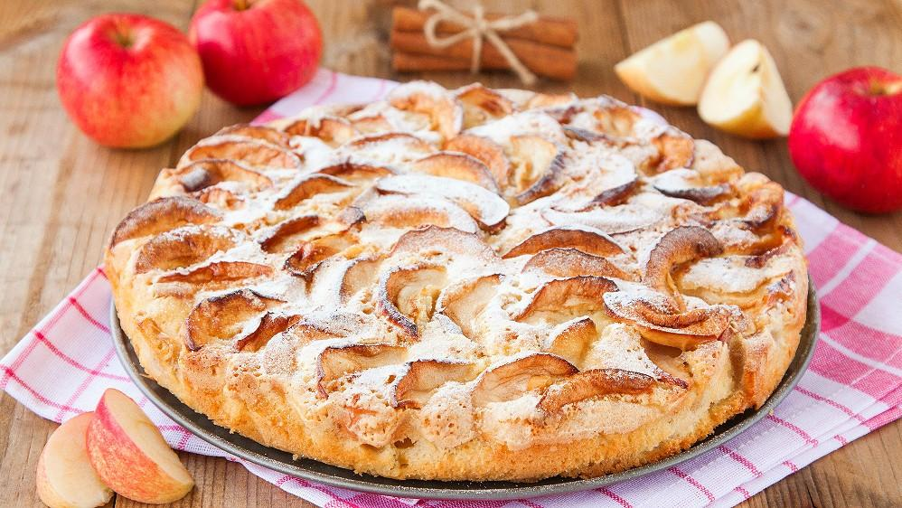

Шарлотка
СПОСОБ ПРИГОТОВЛЕНИЯ1.Яблоки очистить от кожуры, семенных коробочек и нарезать ломтиками.
2. Включите мультиварку в режим подогрева и положите в кастрюльку кусочек масла, чтобы оно растаяло.
Когда растает — слегка смажьте этим маслом стенки кастрюльки и добавьте 2 столовые ложки сахара (коричневый сахар даст более золотистый цвет, но можно брать обычный). Помешивать деревянной или пластмассовой ложкой, пока сахар полностью не растворится в масле.
3. Уложить на дно первый слой яблок красиво (начинайте укладывать от внешнего края) — это ведь будет верх пирога! Затем выложите на первый слой остальные яблоки, как угодно, не очень плотно.
4. Миксером взбивать яйца с сахаром, пока сахар не растворится. Добавить стакан муки с разрыхлителем и продолжать взбивать. Тесто будет, как сметана.
5. Вылить тесто на яблоки. Поставить на 40 минут в режим выпечка. Когда готово, перевернуть на сервировочное блюдо.

Приятного аппетита!
Больше информации здесь \/ \/ \/
И.Н.Ф.А